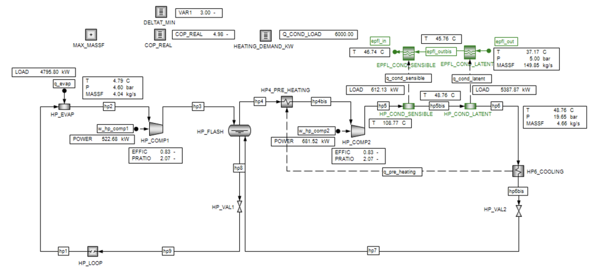
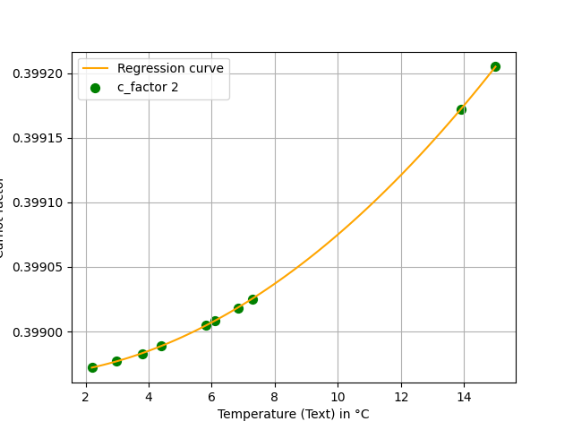
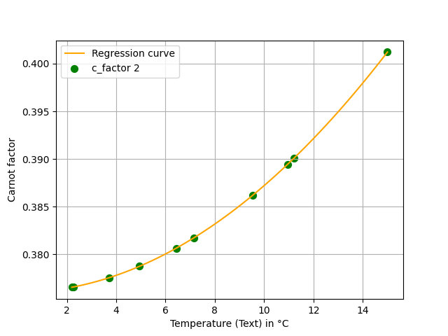
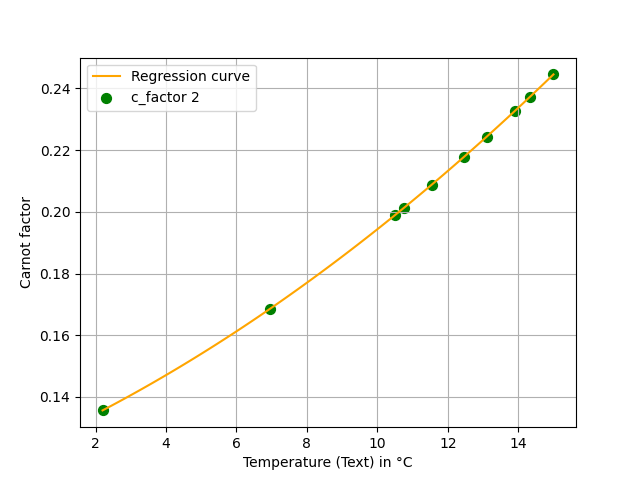
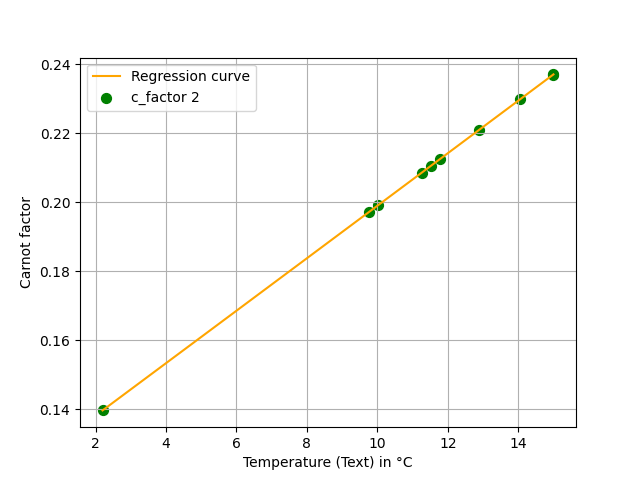

| Tag Name | Unit | Option 1 | Option 2 | Option 3 | Option 4 | Option 5 |
|---|---|---|---|---|---|---|
| HP_COMP1_EFFIC | - | OFF | CST | CST | OFF | CST |
| HP_COMP1_PRATIO | - | CST | OFF | CST | OFF | OFF |
| HP_FLASH_DP | bar | OFF | CST | OFF | CST | CST |
| HP_COMP2_EFFIC | - | CST | CST | CST | OFF | CST |
| HP_COND_LATENT_DP | bar | OFF | OFF | CST | CST | OFF |
| HP_EVAP_DP | bar | CST | OFF | CST | CST | OFF |
| COP_REAL | - | OFF | OFF | OFF | OFF | CST |
| HP_COND_SENSIBLE_DP | bar | OFF | CST | CST | CST | OFF |
| EPFL_COND_SENSIBLE_DP1 | bar | CST | CST | OFF | OFF | OFF |
| EPFL_COND_LATENT_DP1 | bar | OFF | OFF | CST | OFF | OFF |
| Q_COND_LOAD | kW | CST | OFF | CST | CST | CST |
| DELTAT_MIN_VAR1 | C | CST | CST | OFF | CST | OFF |
| MAX_MASSF_HP2 | kg/s | OFF | OFF | CST | CST | OFF |
| MAX_MASSF_HP6 | kg/s | OFF | CST | OFF | CST | CST |
| HP2_T | C | OFF | OFF | CST | CST | OFF |
| HP2_MASSF | kg/s | OFF | CST | CST | OFF | CST |
| W_HP_COMP1_POWER | kW | OFF | CST | OFF | OFF | OFF |
| W_HP_COMP2_POWER | kW | CST | OFF | OFF | OFF | CST |
| HP5_T | C | CST | CST | CST | OFF | CST |
| HP5BIS_T | C | OFF | OFF | OFF | OFF | CST |
| HP6_T | C | OFF | CST | CST | OFF | OFF |
| HP6_MASSF | kg/s | OFF | OFF | OFF | OFF | OFF |
| Q_COND_LATENT_LOAD | kW | OFF | CST | CST | OFF | OFF |
| HP1_T | C | OFF | CST | CST | OFF | OFF |
| Q_EVAP_LOAD | kW | CST | OFF | OFF | OFF | CST |
| Q_COND_SENSIBLE_LOAD | kW | CST | OFF | CST | OFF | OFF |
| EPFL_OUTBIS_P | bar | OFF | OFF | CST | CST | OFF |
| EPFL_OUTBIS_T | C | CST | CST | OFF | OFF | CST |
| EPFL_IN_P | bar | CST | CST | CST | CST | OFF |
| EPFL_IN_T | C | OFF | CST | CST | CST | OFF |
| EPFL_OUT_P | bar | OFF | CST | OFF | CST | OFF |
| EPFL_OUT_T | C | CST | CST | OFF | CST | OFF |
| EPFL_OUT_MASSF | kg/s | OFF | CST | OFF | OFF | CST |
4.1 Introduction
The future centralized heating system at EPFL will utilize a two-stage heat pump with an estimated maximum capacity of 6 MWth. A two-stage heat pump is an advanced system designed to achieve higher efficiency and greater heating or cooling capacity compared to a single-stage heat pump (Morisaki et al. 2024). This design is particularly well-suited for applications requiring significant temperature lifts or large capacity adjustments, such as the EPFL campus.
The proposed heat pump model consists of two interconnected thermodynamic cycles, each comprising of the following key processes : an isothermal evaporation, an adiabatic compression, an isothermal condensation and an isentropic expansion.These two cycles are connected via a flash tank, which facilitates intermediate pressure regulation and enhances the system’s efficiency. The second loop ultimately delivers heat to meet the heating demands of the EPFL campus.
The performance will depend on its working fluid. As part of this project, an appropriate working fluid must be selected for the heat pump based on criterisa such as safety, economics, environmental impact, and other relevant properties. To facilitate this, a model of the heat pump is constructed using the process simulation software Belsim VALI.

This model consists of process units connected by stream flows. Each process unit transforms the stream flow thermo-chemically according to a set of defined equations. The model calculates the state of the outlet flows based on the inlet flows and the unit’s physical properties. These properties are defined by performance parameters, while the simulation includes mass, energy, and momentum balances, along with performance equations.
In terms of stream flows, the Gibbs phase rule asserts that only \(N+2\) variables are required to characterize a stream’s state, where \(N\) is the number of compounds in the flow, and one of these \(N+2\) variables must be extensive (typically the mass flow, \(\dot{m}_{\text{WF}}\)). For this analysis, \(N\) is assumed to be one, as all flows consist of pure, monophasic fluids.
4.2 Degree of Freedom (DOF) Analysis
The degree of freedom (DOF) represents the number of unknowns that need to be specified to solve the equations within each unit. It is defined as:
\[ \text{DOF} = n_{\text{v}} - n_{\text{e}} = (n_{\text{x}} + n_{\text{p}} + n_{\text{t}}) - (n_{\text{c}} + n_{\text{energy}} + n_{\text{i}} + n_{\text{m}}) \]
where:
\(n_{\text{v}}\): Total number of variables
\(n_{\text{e}}\): Total number of equations
\(n_{\text{x}}\): Number of state variables of the streams
\(n_{\text{p}}\): Number of unit parameters
\(n_{\text{t}}\): Number of internal variables
\(n_{\text{c}}\): Number of mass balance equations
\(n_{\text{energy}}\): Number of energy balance equations (typically one)
\(n_{\text{i}}\): Number of impulsion equations
\(n_{\text{m}}\): Number of modelling equations
If DOF = 0 after setting the \(n_{\text{s}}= n_{\text{v}} - n_{\text{e}}\) required parameters, the system of equations can be uniquely solved, enabling the model of the two-stage heat pump to be calculated.
In the VALI model, four main unit types are employed: heat exchangers (HEX), compressors, throttling valves, and separators. Below is the DOF analysis for each unit type.
4.2.1 Heat Exchanger (HEX)
For heat exchangers, the pressure drop is assumed equal to zero through the unit.
Variables:
\(T_{\text{in}}\): Inlet temperature
\(P_{\text{in}}\): Inlet pressure
\(\dot{m}_{\text{in}}\): Inlet mass flow
\(T_{\text{out}}\): Outlet temperature
\(P_{\text{out}}\): Outlet pressure
\(\dot{m}_{\text{out}}\): Outlet mass flow
\(\dot{Q}\): Heat transfer rate
Equations:
\(\dot{m}_{\text{in}} = \dot{m}_{\text{out}}\) (mass balance)
\(P_{\text{in}} = P_{\text{out}}\) (pressure drop constraint)
\(\dot{Q} = A_{\text{area}} \cdot U \cdot \text{LMTD}\) (heat transfer, where \(A_{\text{area}}\) and \(U\) are known design values)
\(\dot{Q} = \dot{m}_{\text{WF}} \cdot \Delta h(T, P)\) (energy balance, with \(\Delta h\) based on \(c_p \cdot \Delta T\) or latent heat \(L_p\), depending on the HEX)
DOF Calculation: DOF = 7 (variables) - 4 (equations) = 3.
4.2.2 Compressor
The compressor model is based on isentropic efficiency, as specified in the VALI documentation.
Variables:
\(T_{\text{in}}\): Inlet temperature
\(P_{\text{in}}\): Inlet pressure
\(\dot{m}_{\text{in}}\): Inlet mass flow
\(T_{\text{out}}\): Outlet temperature
\(P_{\text{out}}\): Outlet pressure
\(T^{is}_{\text{out}}\): Outlet temperature (isentropic transformation)
\(\dot{m}_{\text{out}}\): Outlet mass flow
\(W\): Work input
\(W_{\text{is}}\): Isentropic work input
\(\eta_{\text{is}}\): Isentropic efficiency
Equations:
\(\dot{m}_{\text{in}} = \dot{m}_{\text{out}}\) (mass balance)
\(\dot{Q} = \dot{m}_{\text{WF}} \cdot c_p \cdot \Delta T\) (energy balance)
\(W = \dot{m} \cdot (h_{\text{out}} - h_{\text{in}})\) (work calculation)
\(W = W_{\text{is}} \cdot \eta_{\text{is}}\) (isentropic efficiency relation)
\(\frac{T^{is}_{\text{out}}}{T_{\text{in}}} = \left(\frac{P_{\text{out}}}{P_{\text{in}}}\right)^{\frac{\gamma - 1}{\gamma}}\) (isentropic relation)
\(s(T_{\text{in}}, P_{\text{in}}) = s(T^{is}_{\text{out}}, P_{\text{out}})\) (isentropic constraint)
DOF Calculation: DOF = 10 (variables) - 6 (equations) = 4.
4.2.3 Throttling Valve
For throttling valves, a constant enthalpy (isenthalpic) process with no pressure drop is assumed.
Variables:
\(T_{\text{in}}\): Inlet temperature
\(P_{\text{in}}\): Inlet pressure
\(\dot{m}_{\text{in}}\): Inlet mass flow
\(T_{\text{out}}\): Outlet temperature
\(P_{\text{out}}\): Outlet pressure
\(\dot{m}_{\text{out}}\): Outlet mass flow
Equations:
\(\dot{m}_{\text{in}} = \dot{m}_{\text{out}}\) (mass balance)
\(P_{\text{in}} = P_{\text{out}}\) (pressure drop constraint)
DOF Calculation: DOF = 6 (variables) - 2 (equations) = 4.
4.2.4 Separator (Flash Tank)
Similarly to heat exchangers, the pressure drop is also assumed to be zero across the separator (flash tank). Considering that there are two flows at the inlet and two flows at the outlet, the subscript \(i =1,2\) is used.
Variables:
\(T_{i,\text{in}}\): Inlet temperature
\(P_{i,\text{in}}\): Inlet pressure
\(\dot{m}_{i,\text{in}}\): Inlet mass flow
\(T_{i,\text{out}}\): Outlet temperature
\(P_{i,\text{out}}\): Outlet pressure
\(\dot{m}_{i,\text{out}}\): Outlet mass flow
\(\dot{Q}\): Heat flow
Equations:
\(\dot{m}_{i,\text{in}} = \dot{m}_{i,\text{out}}\) (mass balance, 2 equations)
\(P_{i,\text{in}} = P_{i,\text{out}}\) (pressure drop constraint, 2 equations)
\(\sum \dot{m}_{i,\text{in}} \cdot h(T_{i,\text{in}}, P_{i,\text{in}}) = \sum \dot{m}_{i,\text{out}} \cdot h(T_{i,\text{out}}, P_{i,\text{out}})\) (energy balance)
DOF Calculation: DOF = 12 (variables) - 5 (equations) = 7.
4.3 Selection of Correct CST Tag Set in VALI
Using the DOF analysis, the correct CST tag configuration is identified in VALI. This ensures that no system is overspecified (CST) or underspecified (OFF) within the simulation. From five possible CST tag configurations given in Table 4.1, only one is correct and is determined by analyzing each unit’s DOF and requirements.
- Option 1 is not valid as it would lead to an overconstraint on
EPFL_COND_SENSIBLEas DOF = 3 but 4 values are known [EPFL_OUT(P and T),EPFL_OUTBIS_Tandq_cond_sensible_load]. - Option 2 is not valid as it would lead to an overconstraint on
EPFL_COND_LATENTas DOF = 3 but 4 values are known [EPFL_OUT(P,T and \(\dot{m}\)) andq_cond_latent_load]. - Option 3 is not valid as it lacks one constraint (remainder DOF = 1) to fully assess the variable on the
HP_condbetweenhp5andhp6. - Option 4 seems to be the valid option as it enables to derive all variables of this defined problem. Of course, consistent values need to be implemented for each point as some interconnected units have CST tags on related variables. As an example, the pressure drops for all the units of the EPFL loop are set to CST (
HP_COND_LATENT_DP,HP_COND_SENSIBLE_DP,EPFL_COND_SENSIBLE_DP1,EPFL_COND_LATENT_DP1) and so are the pressures within the loop (EPFL_OUT_P,EPFL_OUTBIS_P,EPFL_IN_P). - Option 5 is not valid as defining no state variables (T and P) induces a lack of constraint. For instance,
HP_vaponly getsq_evap_loadas a specification.
Consequently, Option 4 will be selected in the VALI model, enabling an analysis of the working fluids under the specified constraints.
4.4 Model adjustment to a second working fluid
First, the reference working fluid R-290 (propane) is selected for its favourable balance of performance and environmental impact. With a Global Warming Potential (GWP) of 3.3, R-290 has a relatively low contribution to climate change compared to many other refrigerants. However, its primary drawback lies in its flammability, which raises safety concerns that must be carefully managed. Despite this limitation, R-290 is widely used in large-scale systems due to its excellent thermodynamic properties and cost-effectiveness (Nawaz et al. 2017).
For comparison, the second fluid considered is Tetrafluoropropene (R-1234yf). This fluid offers a low GWP of 4, making it an environmentally sustainable alternative. With an atmospheric lifetime of just 0.03 years and zero ozone depletion potential, R-1234yf minimizes its long-term environmental impact. In terms of safety, R-1234yf belongs to the A2L safety classification: “A” indicates low toxicity, “2” signifies lower flammability, and “L” designates a slow-burning subcategory (UNEP/ASHRAE 2022). These properties make it an appealing option for applications prioritizing environmental compliance and safety. However, higher operating costs are expected using R1234yf compared to other working fluids (Garcı́a-Pabón et al. 2021).
4.5 Data reconciliation
For both working fluids, computing this two-stage heat pump system will inevitably lead to inaccuracy. All reference values provided to the model are derived from observations of physical properties, which carry margins of error. Generally, two types of errors are considered:
- Systematic errors: These arise from a consistent offset in measurements, typically stemming from instrument bias or dependencies on identifiable quantities.
- Random errors: These represent variability in repeated measurements that cannot be predicted from prior readings and are often due to sensor noise or natural fluctuations.
While random errors may be minimized with filtering, systematic errors require multiple measurements to estimate and adjust for offsets.
Data reconciliation is necessary to ensure that deviations in systematic measurements do not lead to violations of mass or energy conservation laws. By leveraging redundant measurements in the model, data reconciliation minimizes the difference between observed and expected values, effectively solving a constrained nonlinear optimization problem:
\[ \min_{X, Y} \sum_{i=1}^{n_{\text{mes}}} \left( \frac{y_i - y_i^*}{\sigma_i} \right)^2 \]
subject to:
- Mass Balance \((X, Y) = 0\)
- Energy Balance \((X, Y) = 0\)
- Thermodynamic \((X, Y) = 0\)
- Constitutive Equations \((X, Y) = 0\)
- Performance \((X, Y, \pi) = 0\)
- Inequalities \((X, Y) = 0\)
where:
\(y_i\) is a state variable value,
\(y_i^*\) is the measured value,
\(\sigma_i\) is the standard deviation of the measurement.
In this problem, \(X\) represents the state variables to estimate (i.e., non-measured), and \(Y\) represents the measured state variables. The constraints derive from system knowledge or virtual sensors, forming a system of modeling and specification equations \(F(X, Y) = 0\).
Measurements for different time periods (6 to 11) and two temperature levels (low and medium temperature) allow for effective data reconciliation within VALI, providing corrected results for ongoing analysis.
4.6 Evaluation of the Selected Working Fluid
With reconciled data for the two chosen working fluids, a thorough analysis is conducted to aid decision-making. Key parameters for evaluation include thermodynamic performance and investment cost.
4.6.1 Performance Evaluation
The Coefficient of Performance (COP) measures the heat pump’s thermodynamic performance, defined as:
\[ \text{COP}(t) = \frac{Q(t)}{W(t)} \tag{4.1}\]
where \(Q\) is the useful heat produced, and \(W\) is the energy input.
To assess COP’s variation with ambient temperature, \(T_{\text{ext}}(t)\), we derive a regression model for the Carnot factor:
\[ C_{\text{Carnot}}(t) = \frac{\text{COP}(t)}{\text{COP}_{\text{Carnot}}(t)} = \frac{Q(t)}{W(t)} \cdot \frac{T_{\text{cond}}(t) - T_{\text{evap}}(t)}{T_{\text{cond}}(t)} \tag{4.2}\]
where \(T_{\text{cond}}(t)\) and \(T_{\text{evap}}(t)\) are the heat sink and heat source temperatures (in Kelvin), respectively.
An AMPL model is used to fit a polynomial regression curve for the Carnot factor based solely on the ambient temperature \(T_{\text{ext}}(t)\):
\[ C_{\text{Carnot}}^*(t) = a \cdot T_{\text{ext}}^2(t) - b \cdot T_{\text{ext}}(t) + c \tag{4.3}\]
The coefficients \(a\), \(b\), and \(c\) are obtained by minimizing the mean square error:
\[ \min_{a, b, c} \sum_t \left( C_{\text{Carnot}}^*(t) - C_{\text{Carnot}}(t) \right)^2 \tag{4.4}\]
This regression (Equation 4.3) captures operational efficiency, environmental conditions, and theoretical limits, while remaining valid only within the ambient temperature range 2.2°C to 15°C. Although a higher-order polynomial might offer improved precision, it could lead to overfitting due to limited data points.
This analysis is performed for each working fluid at both low and medium temperature levels. The regression coefficients are presented in Table 4.2, and the Carnot factor is plotted against ambient temperature in Figure 4.2.
| Working Fluid | Temperature Level | a | b | c | Error Estimation |
|---|---|---|---|---|---|
| R-290 | LT | 1e-06 | 1e-06 | 0.398965 | 0.195492 |
| R-290 | MT | 0.000111965 | 1e-06 | 0.376003 | 0.0707854 |
| R-1234yf | LT | 0.000196424 | 0.00513117 | 0.123403 | 0.00251004 |
| R-1234yf | MT | 1e-06 | 0.00758805 | 0.12301 | 0.0064256 |
|  |  |
|---|---|
|  |  |
4.6.2 Investment costs evaluation
The investment cost for the heat pump primarily stems from the heat exchangers and compressors. To evaluate this economic impact, the unit cost of the two-stage heat pump is calculated, accounting for the size of both components.
The area of heat exchangers is determined under worst-case conditions, which then defines the compressor size. With reconciled results and ambient temperatures, the size of these units enables cost estimation.
On the one hand, the heat exchanger includes both a condenser and an evaporator, allowing us to separate its total cost into two components:
\[ C_{\text{HEX}} = C_{\text{condenser}} + C_{\text{evaporator}} \tag{4.5}\]
For both heat exchangers the cost is evaluated based on the area needed for the heat exchanger. The equation for the cost is the following:
Condensator: Cost = \(10^{k_1 + k_2 *\log_{10}(A_{cond}) + k_3*( \log_{10}(A_{cond}) )^2} \cdot \frac{I}{I_{ref}} \cdot f_{BM}\)
Evaporator: Cost = \(10^{k_1 + k_2 *\log_{10}(A_{evap}) + k_3*( \log_{10}(A_{evap}) )^2} \cdot \frac{I}{I_{ref}} \cdot f_{BM}\)
where (Ali 2013):
\(k_i\) are empirical constants,
\(A\) is the heat transfer are of the unit,
\(I\) is the cost index.
\(I_{ref}\) is the reference cost index corresponding to the time when the \(k_i\) were determined.
\(f_{BM}\) is the bare module factor.
On the other hand, the system includes two compressors, so the total compressor cost can be expressed as:
\[ C_{\text{compressor}} = C_{\text{compressor1}} + C_{\text{compressor2}} \tag{4.6}\]
The cost for the compressors is given by the formula:
Cost = \(10^{k_1 + k_2 *\log_{10}(W_{max}) + k_3*( \log_{10}(W_{max}) )^2} \cdot \frac{I}{I_{ref}} \cdot f_{BM}\)
where \(W_{max}\) is the power needed by the compressor during the extreme period.
The total cost of the heat pump system is then defined as:
\[ C_{\text{HP}} = C_{\text{HEX}} + C_{\text{compressor}} \tag{4.7}\]
Finally, the unit cost of the system can be determined based on the installed heat pump capacity:
\[ c_{\text{HP}} = \frac{C_{\text{HP}}}{Q_{\text{HP}}} \quad [\text{CHF/kW}] \tag{4.8}\]
Table 4.3 lists the worst-case conditions that determine the system’s total cost.
| Parameters | R-290 LT | R-290 MT | R-1234yf LT | R-1234yf MT |
|---|---|---|---|---|
| Condenser Area [m2] | 636 | 1432 | 1374 | 1621 |
| Evaporator Area [m2] | 1306 | 1359 | 1015 | 703 |
| Cost HEX [CHF] | 1799373 | 2618830 | 2205921 | 2194472 |
| Cost Compressor 1 [CHF] | 572195 | 619408 | 637552 | 795136 |
| Cost Compressor 2 [CHF] | 692000 | 771960 | 1058090 | 1480810 |
| Compressors Cost [CHF] | 1264195 | 1393368 | 1695642 | 22759467 |
| Total Heat Pump Cost [CHF] | 2864568 | 4000198 | 3890563 | 4470418 |
| Unit Cost per kW [CHF/kW] | 520 | 664 | 760 | 715 |
4.7 Decision support
Now that the key parameters have been estimated, the two working fluids—R-290 and R-1234yf—can be thoroughly compared to determine the most suitable choice for EPFL’s new two-stage heat pump system.
As illustrated in Figure 4.2, R-290 demonstrates superior thermodynamic performance within the analysed range, achieving higher efficiency across varying ambient temperatures compared to R-1234yf. Economically, R-290 also proves to be the more cost-effective solution under worst-case conditions, providing substantial savings in operating costs.
However, it is essential to consider the environmental and safety trade-offs. R-1234yf has an exceptionally short atmospheric lifetime of 0.03 years compared to R-290, which lingers for approximately 12 years—making the former nearly 400 times less persistent in the atmosphere. Additionally, R-1234yf is classified as a low-flammability refrigerant (A2L), offering a safer alternative, whereas R-290 poses higher flammability risks that must be addressed. However, R-290 offers the lowest GWP of the two working fluids.
Given this analysis, R-290 is recommended for EPFL’s new two-stage heat pump. While it presents some challenges in terms of flammability and atmospheric persistence, its superior thermodynamic and economic performance makes it a highly viable option. With robust safety measures in place to mitigate potential hazards, R-290 can reliably and efficiently support the campus’s heating needs while aligning with cost-saving objectives.
Ali, Chaudhry Hassan. 2013. “Capital Cost Estimation Chapter 5.” 2013. https://fr.slideshare.net/slideshow/chapter-5-17550956/17550956.
Garcı́a-Pabón, Juan J, Dario Méndez-Méndez, Juan M Belman-Flores, Juan M Barroso-Maldonado, and Ali Khosravi. 2021. “A Review of Recent Research on the Use of R1234yf as an Environmentally Friendly Fluid in the Organic Rankine Cycle.” Sustainability 13 (11): 5864.
Morisaki, Takafumi, Junichi Ohara, Takeshi Yasunaga, and Yasuyuki Ikegami. 2024. “Performance Analysis of Double-Stage Heat Pump and Refrigeration Cycles.” Applied Thermal Engineering, 123732.
Nawaz, Kashif, Bo Shen, Ahmed Elatar, Van Baxter, and Omar Abdelaziz. 2017. “R290 (Propane) and R600a (Isobutane) as Natural Refrigerants for Residential Heat Pump Water Heaters.” Applied Thermal Engineering 127: 870–83.
UNEP/ASHRAE. 2022. “Update on New Refrigerants Designations and Safety Classifications.” 2022. https://www.ashrae.org/file%20library/technical%20resources/bookstore/factsheet_ashrae_english_november2022.pdf.